This document covers the comprehensive backtesting framework that captures and analyzes all trading decisions and their real-market outcomes. The system provides complete audit trails from AI decision inputs through execution to final P&L results, enabling strategy evaluation and machine learning dataset generation.
For information about the core trading decision pipeline, see AI Trading Engine. For details about mathematical analysis services that provide input data, see Mathematical Analysis Services.
The backtesting system uses a comprehensive event-sourcing model to capture every aspect of trading activity. The core data structure is the BacktestEventRow interface, which records all trading decisions and their outcomes.
The system tracks eight types of trading events with complete metadata:
| Field | Type | Purpose |
|---|---|---|
resultId |
string | null | Links to complete LLM interaction logs |
signalId |
string | null | Groups events into trading chains |
date |
Date | Precise timestamp of decision/execution |
takeProfit |
boolean | null | Successful target achievement |
stopLoss |
boolean | null | Maximum loss protection trigger |
closeProfit |
boolean | null | Early profitable closure |
closeLoss |
boolean | null | Early loss-cutting closure |
watch |
boolean | null | Position monitoring activity |
wait |
boolean | null | Market analysis with no action |
buy |
boolean | null | Position opening execution |
profitLossPercent |
number | null | Actual percentage return |
profitLossUsd |
number | null | Dollar profit/loss amount |
currentPrice |
number | null | Market price at decision time |
Backtesting Event Flow 
The system classifies all completed trades into four distinct outcome categories based on exit conditions and profitability:
Trade Classification Matrix 
The BacktestMeasureService reconstructs complete trading narratives by grouping events under common signalId values. Each signal represents a complete trading cycle from initial analysis through final closure.
Signal Chain Analysis Architecture 
The system maintains precise temporal relationships between AI decisions and market execution. Each resultId links backtest events to complete LLM interaction logs, providing full decision context reconstruction.
Example signal chain from actual backtest data:
| Date | Event Type | ResultId | Purpose |
|---|---|---|---|
| 2025-09-09 05:16:29 | buy | 7f40d0db-40b9-4000-adc7-72a78a38d000 | Position opening |
| 2025-09-09 05:20:44 | watch | 19cc912c-3ef2-4800-a6ba-37c2d33e4800 | Position monitoring |
| 2025-09-09 06:04:22 | takeProfit | N/A | Target achievement |
The BacktestMeasureService provides comprehensive trade performance analysis through statistical aggregation and outcome classification.
Performance Analysis Pipeline 
The system calculates key performance indicators for strategy evaluation:
Every backtest event includes a resultId that links to complete AI decision records, enabling full context reconstruction for machine learning applications.
Multi-Dimensional Data Linkage 
The system provides multiple export formats for research and development applications:
// Export API endpoint structure
app.post('/export/backtest', async (req, res) => {
const { symbol, period } = req.body;
const dataset = await backtestMeasureService.getBacktestMeasure(symbol, period);
const report = await backtestMeasureService.generateBacktestMeasureReport(symbol, period);
return {
structured_data: dataset, // JSON for ML pipelines
human_readable: report, // Markdown for analysis
metadata: {
total_trades: dataset.totalTrades,
success_rate: dataset.successRate,
avg_return: dataset.averageReturn,
max_drawdown: dataset.maxDrawdown
}
};
});
The backtesting system creates comprehensive supervised learning datasets with complete feature vectors and outcome labels:
Training Data Structure:
Reinforcement Learning Environment:
The system supports comprehensive strategy backtesting through historical data analysis:
The backtesting system exports data in formats compatible with major analysis frameworks: